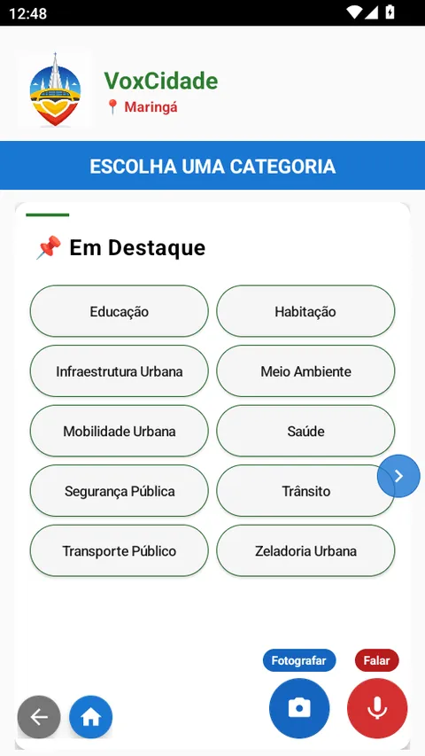
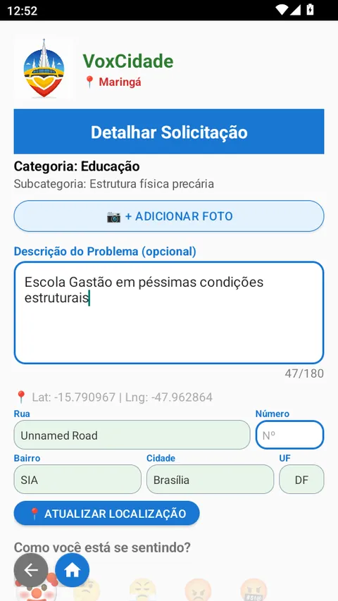
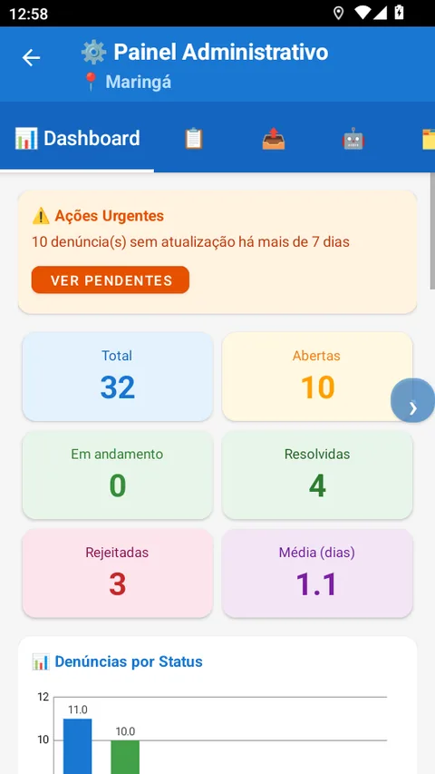
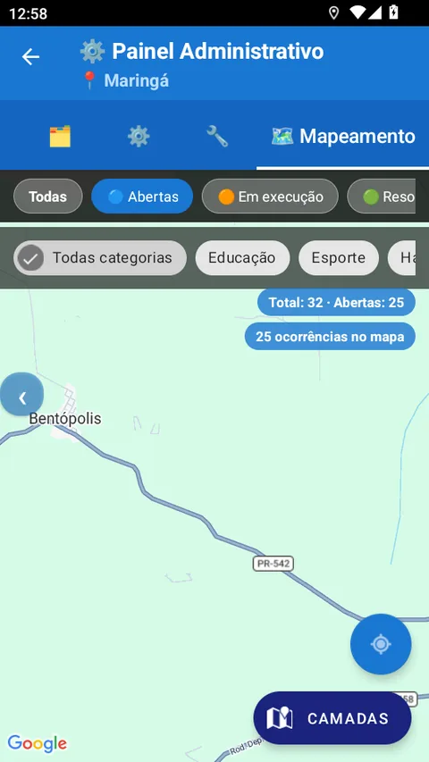
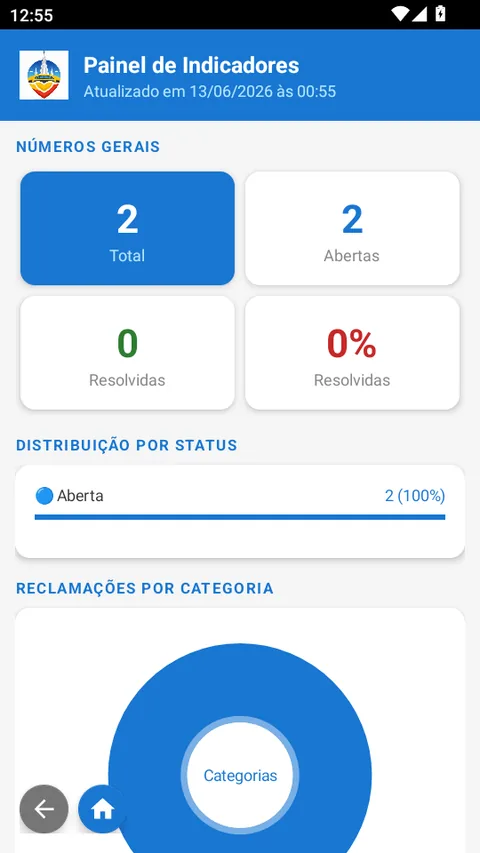
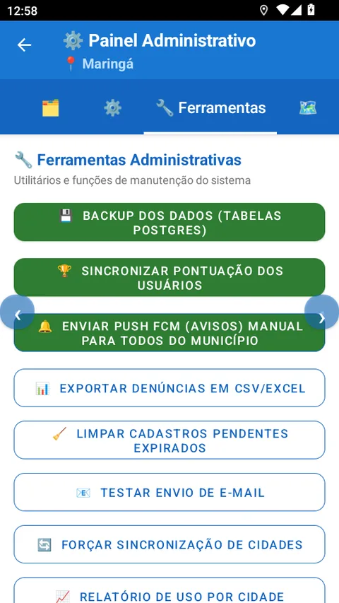

O VoxCidade transforma reclamações dispersas no WhatsApp e nas redes sociais em demandas organizadas, georreferenciadas e prontas para a tomada de decisão — em um painel administrativo completo, seguro e em conformidade com a LGPD.
O desafio de hoje
“A população já reclama todos os dias. O problema não é a falta de voz, é a falta de informação organizada para a prefeitura agir com rapidez.”
Reclamações espalhadas em WhatsApp, redes sociais e ligações — sem registro nem rastreabilidade.
"Tem um buraco na minha rua" — mas qual rua, qual bairro? A equipe perde tempo só localizando.
Impossível saber quais problemas mais se repetem, em quais regiões e com que prioridade.
O mesmo problema chega por cinco canais diferentes, sem histórico nem comprovação de resolução.
A jornada do cidadão
Quanto mais fácil para o cidadão, mais demanda qualificada chega à sua prefeitura — com foto, local e categoria já prontos.
Em segundos o cidadão entra e já escolhe o seu município. Sem burocracia.

29 categorias urbanas. A demanda já chega classificada e direcionada à secretaria certa.

Foto e localização exata automáticas. Sua equipe sabe o quê e onde, sem ligações.
Acessível a todos: a IA transcreve e classifica a fala automaticamente.
O cidadão recebe um protocolo e é notificado a cada etapa — até a resolução.
O painel da prefeitura · parte 1
Visão geral, demandas, mapa e inteligência artificial — cada solicitação vira informação acionável.

Total, abertas, em andamento, resolvidas e tempo médio de resposta. Sabe a saúde da cidade num olhar.
Filtre por status, bairro e categoria. Cada demanda com protocolo, foto e prazo — nada se perde.

Identifique geograficamente as regiões críticas e direcione equipes para onde há mais demanda.
"Quais os bairros em evidência? Quais os maiores problemas?" A IA responde com base nos dados reais.
O painel da prefeitura · parte 2
Dados prontos para o gabinete e ferramentas de administração — tudo sob o seu controle.
Exporte por período, categoria e região em CSV — pronto para o gabinete, secretarias e prestação de contas.

Demonstre resultados à população com números de resolução, distribuição por status e por categoria.

Backup de dados, avisos por push para o município, cadastro de gestores e exportações — sob seu comando.
Veja em ação
Acompanhe o fluxo completo entre o cidadão e a prefeitura.
Tira a foto, marca o GPS e descreve o problema. Em menos de 2 minutos.
A demanda chega ao painel já com foto, local e categoria definidos.
No mapa e no dashboard, define a prioridade e direciona a equipe responsável.
Concluída a ação, o cidadão é avisado e o histórico fica registrado.
▶ Demonstração animada do fluxo — telas reais do aplicativo nas seções acima.
Geração 3 · Orquestração
Dashboards respondem “o quê” e “onde”. Falta o essencial: e agora? quem age? qual a prioridade? qual o prazo? A Central de Providências transforma cada análise em uma Missão — com responsável e prazo.
Cada Missão já nasce com um plano de ação completo:
Por que adotar
Mais do que um canal de reclamações — uma ferramenta de governança.
Um canal oficial, transparente e moderno que mostra que a prefeitura ouve e responde.
Indicadores públicos e histórico de cada demanda comprovam o trabalho realizado.
Saiba quais problemas e regiões exigem mais atenção e aloque recursos com inteligência.
Substitui o WhatsApp e as redes sociais por um fluxo único, rastreável e auditável.
A gamificação engaja a população a cuidar da cidade de forma contínua.
Triagem por IA e priorização por dados reduzem o tempo entre o registro e a solução.
O que esperar
Benefícios concretos desde os primeiros meses de uso.
Um canal acessível e recompensador multiplica o número de cidadãos engajados com a cidade.
Demandas já classificadas e localizadas encurtam o caminho entre o registro e a ação.
Toda a demanda da cidade em um só lugar, com rastreabilidade e comprovação de resolução.
Dados prontos para secretarias e gabinete embasarem políticas públicas e prestação de contas.
A população percebe que é ouvida e acompanha cada solução — fortalecendo a relação com a gestão.
Decisões baseadas em onde a cidade mais precisa, evitando desperdício e retrabalho.
Segurança e tecnologia
Infraestrutura moderna, dados protegidos e total conformidade com a legislação.
Tratamento de dados pessoais em linha com a Lei Geral de Proteção de Dados, com exclusão e reativação de conta sob controle do cidadão.
Dados sensíveis protegidos com criptografia de nível bancário, em trânsito e em repouso.
Infraestrutura em nuvem gerenciada com proteção contra ataques e filtragem de tráfego via Cloudflare.
Cada prefeitura acessa apenas os dados da sua cidade. Os dados nunca se misturam entre municípios.
Backups diários criptografados e recuperação de desastres em múltiplas camadas garantem a continuidade do serviço.
Inteligência artificial classifica demandas e modera conteúdo, mantendo o foco em problemas urbanos legítimos.
Agende uma demonstração sem compromisso e conheça a plataforma com os dados da sua cidade.
Preencha e retornamos o contato para apresentar o VoxCidade ao seu município.